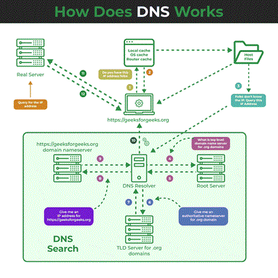

Domain Naming System

The Domain System is the fundamental component of the internet which translates human readable Domain names(ex:www.gmail.com)into IP Addresss (like 192.168.0.1) that computers use to indentify ach otheron the network.
Steps in Domain Name Resolution
- Query Initiation:The user's sends request to recursive DNS resolver
- Recursive Resolver:The resolver checks the cache for IP address, if not found it queries the DNS Hirarchy
- Root Name Server: Directs the Resolver to appropriate Top level Domain
- TLD Name Server
- Authoritative Name Server
- Query Resolution
Types of DNS Servers
- Recursive DNS Server
- Authortative DNS Server
- Caching DNS Server
- Forwarding DNS Server